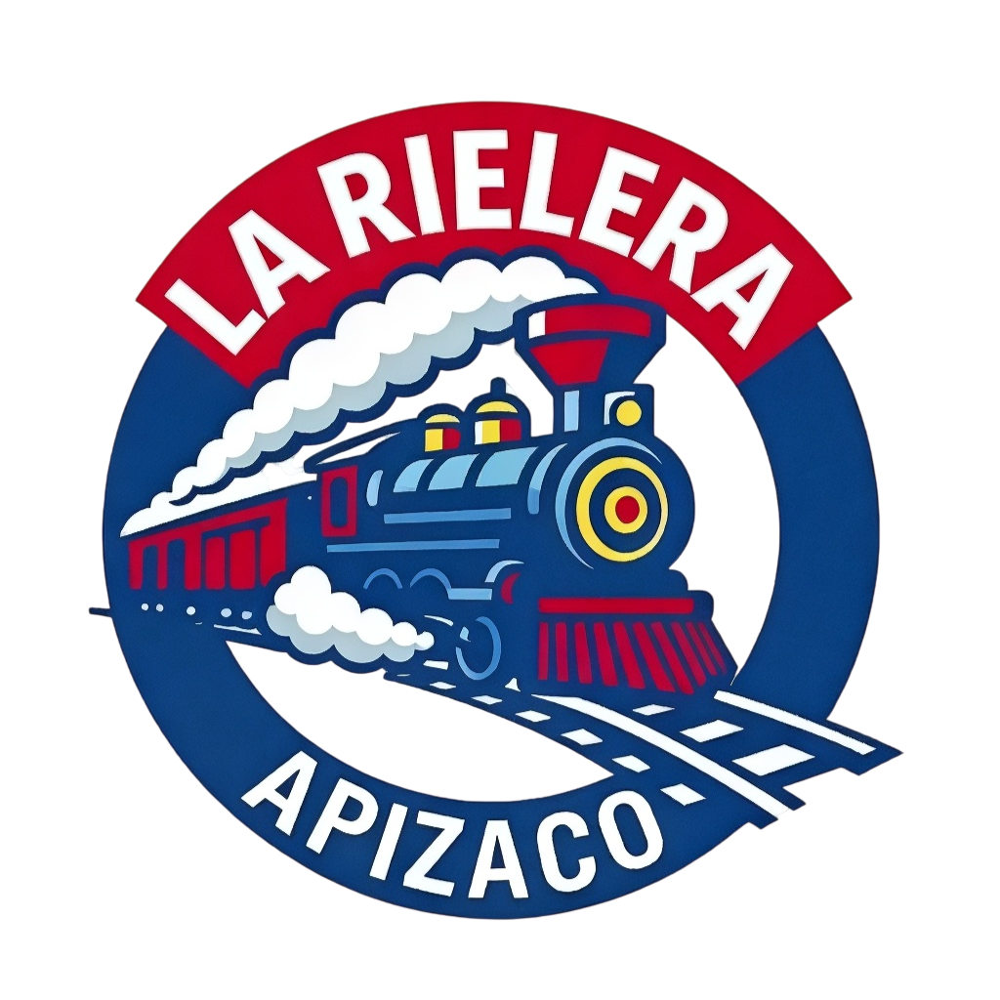
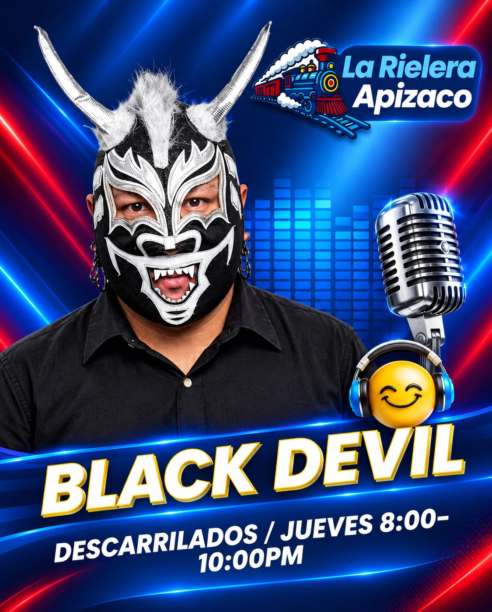

Tu mejor compañía musical
La música que mueve a Apizaco
Sintoniza la mejor variedad musical, noticias y entretenimiento para toda la familia
Despierta con la mejor actitud
Acompañamos tus mañanas con la energía positiva que necesitas para empezar el día
Sin interrupciones, siempre contigo
Disfruta de una selección musical única que te hará vibrar en cualquier momento del día
En vivo: La mejor música para ti
Conoce a la voz detrás de La Rielera, los locutores que te acompañan todos los días
